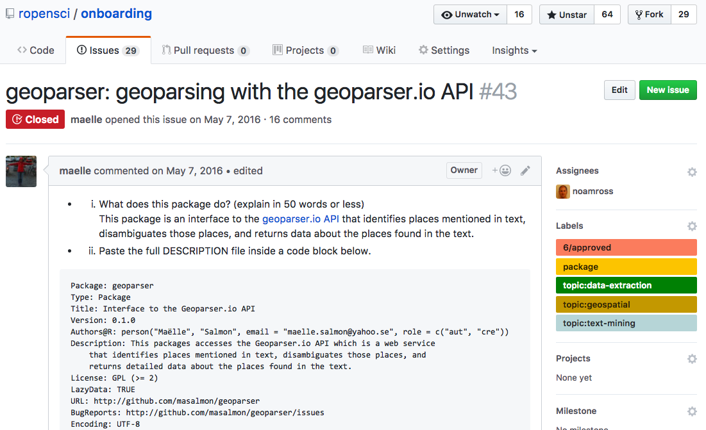

Cultivating Community around software and data
Scott Chamberlain (@sckottie/@ropensci)
UC Berkeley / rOpenSci


scotttalks.info/esa17
LICENSE: CC-BY 4.0
Open science ecosytsem

Community:
People
Software
Data
Data
People
Software
ropensci &
data providers
- API first! GUI website after
- see #1
- Think about data size/use cases/how often updated/etc.
- Clients, clients, clients - users may use website, but reproducbility should be paramount
- Reach out to rOpenSci - we can help
rOpenSci Software Review
rOpenSci Software Review
Completely open source tools
Free to run
All reviews/conversations in the open
Reviews are/can be linked to code changes
Paired with submission to a journal - JOSS
Software Review: Rising Tide Raises All Boats
what it looks like
ropensci/onboarding#43

how to make a resilient contributor base?
be really nice!!!
> 1 contributor
direct access to dedicated contribs
contributor diversity
turn users into contribs
Make software work easier: incentives
make software count for tenure/grad school
more funding opportunities
more jobs making software in academia
Make software work easier: remove barriers
make path academia to industry easy
provide software training